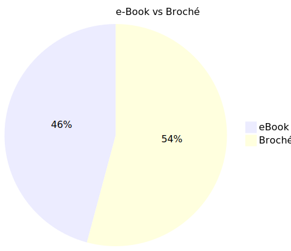

Dans les marges
Le blog personnel de l'auteur Cyril Vallée.
2020 en livres
Un petit résumé de mes lectures sur l'année écoulée.
La liste de ce que j’ai lu pour l’année 2020 porte le compte à 35. C’est plus que l’an dernier (28), mais loin de l’objectif que je m’étais fixé de un livre par semaine.
La répartition ebook/livre papier est de 11/24, moins que ce que j’imaginais. D’une manière générale, je tire une leçon à ce sujet: j’ai maintenant tendance à lire la fiction sur la liseuse, et les autres livres « non-fiction » en version brochée, car la prise de note dans les marges est bien plus aisée —oui, je fais partie de ces gens qui font vivre leurs livres, les annotant, cornant les pages, dialoguant avec l’auteur.
Je lis encore un peu plus de papier que de version électronique.

{kind=link}
La répartition fiction/n-f est plus intéressante: plus de soixante-dix pour cent de mes lectures sont de la non fiction.
Une répartition assez équilibrée.

Enfin, il semble que je lise à peu près autant en anglais qu’en français (19/16).
La liste
- The bullet journal method de Caroll Ryder (2020-01-02)
- The Antidote de Oliver Burkeman (2020-01-12)
- Sapiens : Une Brève Histoire de l’Humanité de Yuval Noah Harari (2020-02-07)
- Deep Work de Cal Newport (2020-02-14)
- We should all be feminist de Chimamanda Ngozi Adichie (2020-02-09)
- How to have impossible conversations de Peter Boghossian & James Lindsay (2020-03-01)
- Profession romancier de Haruki Murakami (2020-03-10)
- Everything is f*cked de Mark Manson (2020-03-28)
- Alerte de Anonyme (2020-03-31)
- How to take smart notes de Sonke Ahrens (2020-04-06)
- La philosophie comme manière de vivre (2020-04-10)
- Terre errante de Cixin Liu (2020-04-16)
- Take control of Devon Think 3 de Joe Kissel (2020-05-16)
- Un(e) Secte de Maxime Chattam (2020-05-30)
- Comment écrire des histoires de Elisabeth Vonnaburg (2020-05-17)
- Les cendres de Babylone, The Expanse 6 de James S.A. Corey (2020-06-06)
- The Infinite Game de Simon Sinek (2020-06-11)
- Don’t panic, Douglas Adams and the Hitchhiker’s guide to the galaxy de Neil Gaiman (2020-06-13)
- Meurtres en douceur de Ray Bradbury (2020-06-15)
- Le jour des cendres de Jean-Christophe Grangé (2020-07-07)
- Comme par magie de Elisabeth Gilbert (2020-07-12)
- Mange, prie, aime de Elisabeth Gilbert (2020-07-24)
- Les flammes de l’empire, l’Interdependance T2 de John Scalzi (2020-07-26)
- Le dernier secret du Vatican de Steve Berry (2020-08-02)
- Les Saintes Reliques de Steve Berry (2020-08-08)
- The calculating stars de Mary Robinette Kowal (2020-08-24)
- Mastery de Robert Greene (2020-09-13)
- La Vallée de Bernard Minier (2020-10-04)
- The Art of Possibility de Rosamund Stone Zander & Benjamin Zander (2020-10-12)
- 5'000 words per hour de Chris Fox (2020-11-10)
- Dark Mirror de Barton Gellman (2020-11-15)
- L’illusion de Maxime Chattam (2020-11-29)
- Le gène Atlantis de A.G. Riddle (2020-12-08)
- The system de James Ball (2020-12-11)
- Thinking, Fast and Slow de Daniel Kahneman ()
- Le Fléau Atlantis de A.G. Riddle ()
- The Daily Stoic de Ryan Holiday and Stephen Hanselman (2020-12-31)